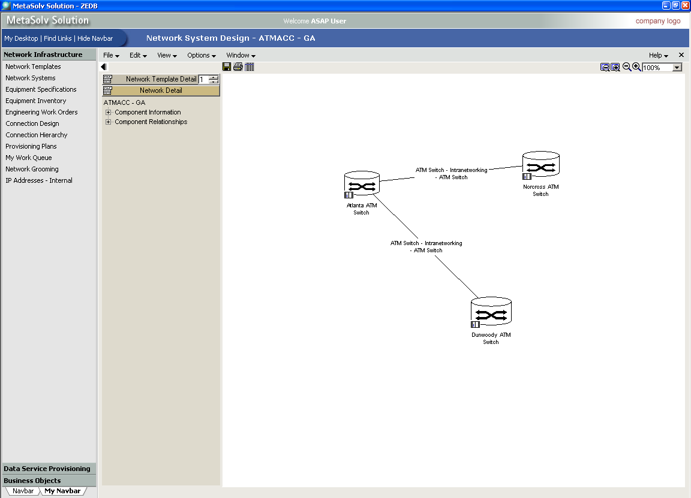
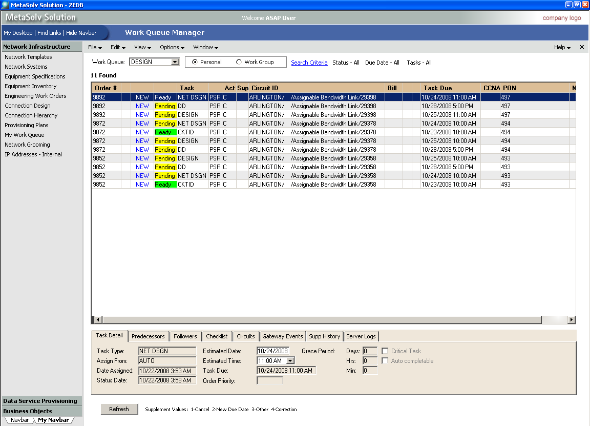
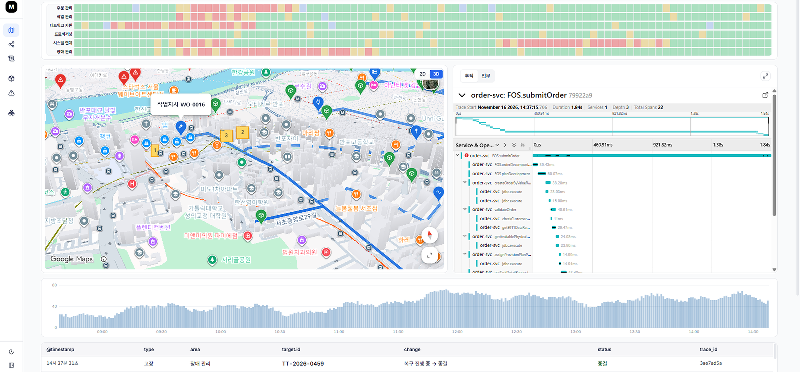

1. 한눈에 보기
이 데모는 통신사의 두 가지 핵심 업무 — 주문(신규 개통)과 고장 관리 — 를 다룬다. 실제 통신사가 쓰는 레거시 시스템을 그대로 두고, 그 위에 온톨로지와 에이전트를 얇게 얹는 방식을 보여준다.
- 주문 관리 — 유무선 결합상품의 신규 개통을 처음부터 끝까지 처리한다.
- 고장 관리 — 회선 구성과 네트워크 장애를 진단하고 해결한다.
- 온톨로지 + 시뮬레이션 — 두 업무에서 생기는 문제의 원인을 분석하고, 해결책을 미리 돌려보고 조치를 고른다.
2. 사용하는 레거시 시스템
통신사의 주문·개통·과금·회선 관리는 오랫동안 아래의 전문 시스템들이 맡아 왔다. 이 데모는 이들을 교체하지 않고 그대로 활용한다.
| 시스템 | 이 데모에서의 역할 |
|---|---|
| TIBCO FOS | 주문을 잘게 나누고 순서대로 조율하는 주문 오케스트레이션(Fulfillment Order Suite) |
| Oracle Siebel | 고객·상품 주문 접수(CRM·오더 캡처) |
| Oracle BRM | 요금·과금을 처리하는 빌링(Billing and Revenue Management) |
| Oracle ASAP | 장비에 서비스를 실제로 켜는 액티베이션(개통) |
| Oracle MetaSolv | 회선·네트워크 자원의 구성과 인벤토리 |
3. 주문 관리 — 유무선 결합상품 신규 개통
유무선 결합상품은 여러 서비스를 하나의 주문으로 묶기 때문에, 여러 레거시가 순서대로 맞물려 돌아간다. 접수된 주문이 어떻게 분해되고, 회선이 구성되고, 실제로 개통되어 과금까지 이어지는지를 한 흐름으로 보여준다.
주문 접수
Siebel에서 결합상품 주문을 받는다.
주문 분해·조율
FOS가 주문을 세부 작업으로 나눠 순서를 잡는다.
회선 구성
MetaSolv이 회선·네트워크 자원을 배정한다.
개통
ASAP이 장비에 서비스를 실제로 켠다.
과금 등록
BRM이 요금제를 걸고 과금을 시작한다.
4. 고장 관리 — 회선과 네트워크 장애 해결
개통이 끝이 아니다. 운영 중에는 회선 문제와 네트워크 장애가 생긴다. 이 데모는 회선 구성과 네트워크 장애를 해결하는 고장 관리도 함께 구성한다.
- 인시던트 접수 — 네트워크 장애나 회선 문제를 고장 인시던트로 받는다.
- 원인 추적 — 어떤 회선·자원·서비스가 얽혀 있는지 따라가 원인을 좁힌다.
- 조치 — 문제를 해결하고, 영향을 받은 주문·서비스까지 되짚는다.
5. 온톨로지로 묶는다
주문 관리와 고장 관리는 각각 온톨로지로 표현된다. 주문·서비스·회선 자원·인시던트가 서로 어떻게 연결되어 있는지가 한 화면에서 드러나므로, "이 장애가 어떤 주문과 고객에게 번지는가"를 사람도 에이전트도 같은 그림으로 본다.





6. 문제 → 원인 분석 → 시뮬레이션 → 의사결정
주문과 고장 관리에서는 다양한 문제가 생긴다. 예를 들면 이런 것들이다.
- 고장 인시던트 처리 지연 — 장애 대응이 늦어진다.
- 네트워크 장애 — 회선·자원 문제로 서비스가 끊긴다.
- 주문 폴아웃 — 개통 과정에서 주문이 중간에 실패해 쌓인다.
JuneAI는 온톨로지로 이런 문제의 원인을 분석하고, 가능한 해결책을 시뮬레이션으로 미리 돌려본다. 그리고 에이전트가 그 결과를 바탕으로 최적의 조치를 골라 의사결정을 돕는다.
레거시는 그대로, 온톨로지는 그 위에 얇게. 주문과 고장관리의 문제를 원인까지 분석하고, 해결책을 미리 시뮬레이션해 가장 나은 조치를 고른다.